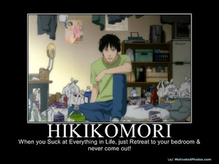
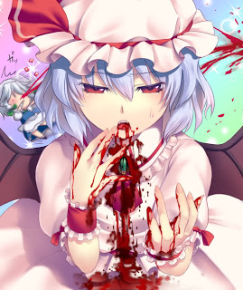
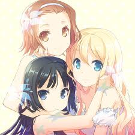
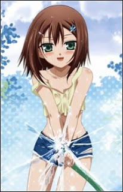
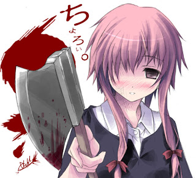

Istilah Unik Dalam Anime

Apa Saja Sih Istilah Unik Dalam Anime
Yoo... Kali ini saya akan posting seputar istilah - istilah yang sering muncul dalam Anime seperti Hikikomori, OVA dsb.
Okelah langsung saja.... Jangan malas membaca yah....
- OVA : (Original Animated Video) adalah anime yang langsung dirilis dalam bentuk video dan tidak ditayangkan di bioskop atau di televisi terlebih dahulu. Kadang disebut juga OAV (original animated video).
- Seiyuu : dubber atau pengisi suara dalam bahasa jepang
- Ero : hal - hal yang berbau erotisme
- Crossover : Persilangan dua seri atau lebih, banyak dijumpai dalam doujinshi, tapi ada pula yang sengaja dibuat oleh mangaka untuk memperingati hari tertentu.
- ONA/"Original Net Animation" : Anime yang tidak dipublikasikan lewat televisi, namun disebarkan pada media Internet melalui situs streaming. Cth: Penguin Musume, Bounen no Xam'd, The Melancholy of Suzumiya Haruhi-chan.
- Tankoubon : format manga yang berbentuk satu buku tersendiri yang biasa kita lihat (kalo ga ngerti, di indonesia dipakai istilah volume). Di jepang, suatu manga di terbitkan per chapter di majalah kumpulan manga seperti Nakayoshi atau Shounen jump. Setelah itu baru dirilis tankoubonnya jika judul tersebut dirasa sudah terkenal atau jumlah chapternya sudah mencukupi
- E/Ero/Ecchi : Diibaratkan batas antara Hentai dan non Hentai. Biasa menunjuk pada manga/anime yang menampilkan banyak fanservice untuk menarik perhatian fans
- Buruma/"Bloomers" : Celana bawahan yang dikenakan karakter perempuan saat berolahraga.
- Josei : Pengertian Josei adalah Perempuan muda.
Manga dan anime yang ditargetkan pada perempuan usia 18-30 tahun/tingkat kuliah. Setingkat dengan seinen, cerita romancenya lebih realistis, dengan cerita lebih dewasa dan eksplisit.
- Yuri : Seri tipe ini mengulas hubungan yang intim antar wanita dengan wanita
- Yaoi : Kebalikan dari "Yuri"Seri tipe ini mengulas hubungan yang intim antar alaki-laki dengan laki-laki.
- Seinen : Pengertian Seinen adalah Laki-laki muda.
Manga dan anime yang ditargetkan pada laki-laki/pemuda usia 18-25 tahun. Dimana ceritanya dibuat untuk menarik golongan mahasiswa atau yang sudah berada di dunia kerja . Biasanya cerita berkisar dalam dunia nyata dan pendewasaan diri.
- Shounen : Seri yang ditujukan terutama bagi laki-laki, dimana biasanya mengandung pertarungan dan kekerasan.
- Shoujo : Seri yang ditujukan terutama untuk wanita. Biasanya merupakan kisah romantis, dan terdapat pengembangan karakter yang kuat dalam cerita.
- Comiket / "Comic Market" : Pameran atau book fair yang diadakan di Jepang setahuun dua kali, selalu dijejali penggemar komik.
- Fetish : Minat, kesukaan yang spesifik akan suatu hal, baik anggota tubuh, sifat, keadaan, dll.
- Omake : corat coret gambar atau kata2 dari pngarang di akhir tankoubon, biasanya tidak brhubungan langsung dengan jalur crita.
- Saimoe : Kontes popularitas karakter-karakter anime yang diadakan tiap tahun.
- Sukumizu : Baju renang klasik yang biasa dikenakan karakter perempuan saat berenang di kolam sekolah.
- Seme/Uke : Istilah dalam cerita bergenre Yaoi/Shounen ai
Seme: karakter yang menyerang-bisa diibaratkan perannya sebagai pihak LelakiAnimelo / "Animelo Summer Live" : Konser Anime terbesar di Jepang yang dilakukan tiap tahun, pertama kali diadakan musim panas tahun 2005.
- Brocon/"Brother complex" : Memiliki perasaan/ hubungan percintaan dengan saudara laki-laki
(onii-chan moe bila saudara laki-laki lebih tua)
- Siscon/"Sister Complex" : Memiliki perasaan/ hubungan percintaan dengan saudara perempuan
(imouto moe bila saudara perempuan lebih muda)
- Mazakon/ Oedicon/Oedipus Complex : Pria yang menyukai wanita yang jauh lebih dewasa, atau bisa juga kasus dimana jatuh cinta pada ibunya sendiri.
- Fazakon : Jatuh cinta pada ayahnya sendiri.
- Karesen kareta ojisan senmon(ka) : Karakter cewek yang menyukai pria dewasa yang sudah tua (jauh di atas usianya)
- Tsukkomi : Satu orang berperan sebagai si pintar, berfungsi sebagai pengumpan.
- Boke : Seorang lagi yang berperan sebagai si bodoh yang terus menyerocos bercerita agar penonton tertawa.
- Ronin / 浪人 / rōshi : Samurai yang kehilangan atau terpisah dari tuannya (samurai tak bertuan)
Biasanya mengembara mencari tujuan hidup.
Di Jepang jaman sekarang, ronin juga berarti lulusan smu yang gagal lulus tes masuk universitas.
- Sekaikei : Anime dengan plot dari sudut pandang orang pertama dan kedua. Umumnya karakter terdiri dari Hero (me), Heroine (you), dan dunia tempat mereka tinggal (the world). Biasanya menceritakan mengenai Heroine yang tindakannya dapat mempertahankan/merubah dunia, dan karakter utama yang mendukung heroine. cth: The Melancholy of Suzumiya Haruhi, Neon Genesis Evangelion, Eureka Seven.
- Unlimited ... works : Dipopulerkan oleh Archer/ fate stay night, dengan jurusnya unlimited blade works.
- Tsurupeta / "Tsurutsuru" (smooth, polished, especially hairless) "Pettan" (flattening) : Tubuh wanita yang 'flat' dan 'smooth'.
- Mangaka : orang yang membuat manga. Bahasa Indonesianya adalah komikus.
- Fujoshi : "rotten girl / fallen woman". Sebutan untuk cewek" penggemar Yaoi, shounen ai.
- Fudanshi : Sebutan untuk cowok pnggemar yuri, shoujo ai.
- Futa/Futanari : "Two From" atau "Hermaprodhite". Karakter dengan dua kelamin. oWo
- Guro : biasanya guro bergabung dengan horror, tapi sebenarnya, guro adalah istilah untuk cerita yang banyak menampilkan, adegan2 DP seperti organ tubuh manusia tercerai berai, potong sana, potong sini.

- Bishoujo: artinya cewek muda yang cantik

- Bishounen: cowok yang cantik

- Ikemen: Cowok yang keren

nah itu lah beberapa istilah-istilah di anime dan manga. mungkin masih banyak lagi istilah yang belum saya sebutkan hehe mohon maaf ya~ m(__)m arigatou and jaa matta nee~ :3/
 |
Cosplay |
Cosplay adalah istilah dalam bahasa inggris yang dibuat oleh Jepang (wasei-eigo) yang asalnya dari gabungan dua kata, yaitu “costum” yang artinya kostum dan “play” yang artinya bermain, costum dan play disingkat menjadi cosplay. Cosplay sendiri berarti.... |
Read More.... |
 |
Vocaloids Songs |
Yoo Friends, beberapa waktu lalu udah saya kasih info seputar Vocaloids dan beberapa Karakternya, sekarang giliran lagunya nih!. Kali ini akan saya beri saran tentang lagu Vocaloids.... |
Read More.... |
|  |
Istilah Dere-Dere |
"Dere - Dere disini diartikan sebagai "Malu" dan kasih sayang, kebanyakan kalian akan menjumpai sifat ini saat menonton Anime bergenre Romance, tapi bukan berarti genre lain tidak memiliki sifat - sifat seperti ini.
Dere memiliki beberapa macam antara lain |
Read More.... |